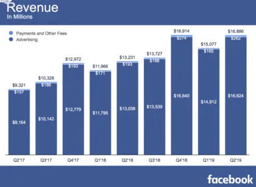
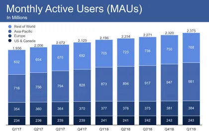

Monetizing personal data: the new form of prostitution¶

I would like to open this article with a quote from the Italian Data Protection Authority, which is also the title of a video:
Data protection is a fundamental right of freedom.
Let us now reflect on the concept of personal data. Personal means something that belongs to us, and whose ownership cannot be transferred. In fact, under the GDPR, we can grant third parties the right to use our personal data, but at any time we retain the right to request its deletion from those to whom we have granted such usage.
It is often said that:
The vast amount of personal data that users pour onto the Internet every day is the new oil. {Andrew Keen}
Some services even suggest that we could directly profit from our personal data instead of leaving all the gains to multinational corporations.
Let us analyze why "renting" out our personal data does not work, why it must not work, and why we should be more cautious.
Why It Doesn't Work¶
Consider Facebook—not to single it out, but simply to make the example concrete.
Facebook's revenue in 2019 was $16,886,000,000:

This is an enormous figure, and clearly driven by the monetization of user data. The idea that users should share in this profit is appealing. However, there is a problem: Facebook's active user base is also enormous.

Dividing revenue by the number of active users reveals that the value of each individual user is less than \$10 per year. Certainly not life-changing.
We might assume that providing higher-quality data would increase this value. For example, we could supply Facebook with our geolocation, smartwatch data, link all our accounts, export browsing history, participate in every survey—and perhaps we would earn slightly more.
But it still wouldn't change our lives.
And, truthfully, Facebook would not be affected if we deleted our account, updated our profile, or not. We are just a drop in an ocean of 2 billion monthly active users.
Why It Must Not Work¶
Facebook states that it profiles users to improve their experience by:
- showing news more aligned with their interests,
- promoting products more relevant to their needs.
In reality, Facebook monetizes the ability to precisely target audiences with news and advertisements.
Now, suppose users began sharing more in Facebook's profits. To pay us more, Facebook would need to generate greater value by offering new services. For example, if I were an influencer, I might promote a fashion brand suggested to me by Facebook. Facebook could then sell this influence to major fashion companies.
The more unconsciously I adopt Facebook's suggestions, the more effective they are. The more people I manage to influence, the more profitable I become. In short, Facebook could begin shaping my behavior—and that of my network—reselling this capacity as a new form of advertising. The more complete and high-quality my data, the more powerful this influence becomes.
To increase user payouts, platforms must also increase their own revenue. Clearly, they could not pay all users equally, but would instead trigger a competition where users are incentivized to provide higher-quality data than others. This would allow platforms to reward a small subset of loyal users while gaining greater power to manipulate the majority.
"I Can Quit Anytime"¶
Joining a social network is like smoking: many smokers claim they can quit anytime, yet they rarely do. And smoking leaves lasting traces in the body, which may resurface years later.
For many, social media use is the same: a release valve into a parallel reality, curated with tailored content. We believe we are in control, exercising free will, yet day by day we are subjected to increasingly powerful manipulation.
True free will can only be exercised when one is capable of resisting the emotions triggered by posts specifically selected to distort perception.
Science fiction? Hardly. Facebook has been known to manipulate—or assist in manipulating—public opinion by:
- conducting social experiments that influenced the emotions of nearly 700,000 users (Facebook apologises for psychological experiments on users),
- interfering in political processes such as Brexit and the 2016 U.S. election (The Great Hack).
And yet, years later, little has been done.
Even if we delete our accounts, Facebook will erase our data, posts, and activities—but it will never erase the models derived from that data. The GDPR protects personal data, but not the derived insights. Thus, the behavioral models—built on our preferences and actions—remain.
Moreover, research has shown (NYT report) that even a few simple attributes can re-identify individuals with 99.98% accuracy.
Why All This Is Allowed¶
As stated earlier, data is the new oil. The reason should now be clear, but there is another dimension: large platforms are potential instruments of social control. Governments—particularly the U.S., where most platforms are based—are eager to exploit such powerful tools under the pretext of ensuring security.
Clearview.ai is a company that scraped billions of photos from social networks to build a massive database. By submitting a photo to Clearview, the system, through facial recognition, returns all matching photos of that person along with their sources.
Unsurprisingly, Clearview's first clients include U.S. government agencies such as the FBI and DHS.
Many people, when it comes to privacy, casually claim to "have nothing to hide." Yet, no one would be comfortable being part of a massive global mugshot database.
Let's be clear: Clearview.ai is illegal because it stole user photos entrusted to social networks. In Europe, it also violates multiple GDPR provisions.
And yet, Clearview.ai remains operational, serving government entities worldwide—including in Europe. Remember the strict filters used to censor websites with copyrighted content? Clearly, there is no interest in blocking Clearview's services.
Conclusion¶
Renting out one's personal data in exchange for money is equivalent to prostitution: you are selling far more than just "data," and receiving only a few coins in return. The use of any digital tool or service must be approached with full awareness of the mechanisms at play:
We must treat personal digital data with the same care and respect as weapons-grade plutonium. It is dangerous, long-lasting, and once leaked, it can never be recovered. {Cory Doctorow}